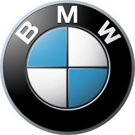

The BMW Group (legally, Bayerische Motoren Werke AG, commonly abbreviated to BMW (German pronunciation: [ˌbeːʔɛmˈveː] ⓘ), sometimes anglicized as Bavarian Motor Works), is a German multinational manufacturer of luxury vehicles and motorcycles headquartered in Munich, Bavaria, Germany. The company was founded in 1916 as a manufacturer of aircraft engines, which it produced from 1917 to 1918 and again from 1933 to 1945 creating engines for aircraft that were used in the Second World War. The companies automobiles are marketed under the BMW, Mini and Rolls-Royce brands, and motorcycles are marketed under the BMW Motorrad brand. Also in 2023, BMW was the world's ninth-largest producer of motor vehicles, with 2,555,341 vehicles produced[3] and in 2023 the 6th largest by revenue.[4] In 2023, the company was ranked 46th in the Forbes Global 2000.[5] The company has significant motor-sport history, especially in touring cars, sports cars, and the Isle of Man TT. BMW is headquartered in Munich and produces motor vehicles in Germany, the United Kingdom, the Netherlands (ceased in 2023),[6] the United States, Brazil, Mexico, South Africa, India and China. The Quandt family [de] is a long-term shareholder of the company, following investments by the brothers Herbert and Harald Quandt in 1959 that saved BMW from bankruptcy, with the remaining shares owned by the public. History Main article: History of BMW The Otto Flugmaschinenfabrik was founded in 1910 by Gustav Otto in the Kingdom of Bavaria, which was a state of the German Empire. The firm was reorganized on 7 March 1916 into Bayerische Flugzeugwerke AG. This company was then renamed to Bayerische Motoren Werke (BMW) in 1922. However, the name BMW dates back to 1913, when a company to use the name was founded by Karl Rapp initially as Rapp Motorenwerke. The name and Rapp Motorenwerke's engine-production assets were transferred to Bayerische Flugzeugwerke in 1922, who adopted the name the same year.[7] BMW's first product was produced for fighter aircraft of the Luftstreitkräfte. It was a straight-six aircraft engine called the BMW IIIa, designed in the spring of 1917 by engineer Max Friz. Following the end of World War I, BMW remained in business by producing motorcycle engines, agricultural equipment, household items, and railway brakes. The company produced its first motorcycle, the BMW R 32, in 1923. BMW became an automobile manufacturer in 1928 when it purchased Fahrzeugfabrik Eisenach, which, at the time, built the Austin 7 under licence from Dixi.[8] The first car sold as a BMW was a rebadged BMW Dixi called the BMW 3/15, following BMW's acquisition of the car manufacturer Automobilwerk Eisenach. Throughout the 1930s, BMW expanded its range into sports cars and larger luxury cars. Aircraft engines, motorcycles, and automobiles would be BMW's main products until World War II. During the war, BMW concentrated on the BMW 801 aircraft engine using as many as 40,000 slave laborers.[9] These consisted primarily of prisoners from Nazi concentration camps, most prominently Dachau. Motorcycles remained as a side-line and automobile manufacture ceased altogether. BMW's factories were heavily bombed during the war and its remaining West German facilities were banned from producing motor vehicles or aircraft after the war. Again, the company survived by making pots, pans, and bicycles. In 1948, BMW restarted motorcycle production. BMW resumed car production in Bavaria in 1952 with the BMW 501 luxury saloon. The range of cars was expanded in 1955, through the production of the cheaper Isetta microcar under licence. Slow sales of luxury cars and small profit margins from microcars, meant BMW was in serious financial trouble and in 1959 the company was nearly taken over by rival Daimler-Benz.[citation needed] A large investment in BMW by Herbert Quandt and Harald Quandt resulted in the company surviving as a separate entity. Günther Quandt, was a well-known German industrialist, joined the Nazi party in 1933 and made a fortune arming the German Wehrmacht, manufacturing weapons and batteries.[10] Many of his enterprises were appropriated from Jewish owners under duress with minimal compensation. At least three of his enterprises made extensive use of slave laborers, as many as 50,000 in all.[11] One of his battery factories had its own on-site concentration camp, complete with gallows. Life expectancy for laborers was six months.[11][12] While Quandt and BMW were not directly connected during the war, funds amassed in the Nazi era by his father allowed Herbert Quandt to buy BMW.[9] The relative success of the small BMW 700 assisted in the company's recovery, allowing them to develop the New Class sedans.  1972 BMW 5 Series (1st generation) The 1962 introduction of the BMW New Class compact sedans was the beginning of BMW's reputation as a leading manufacturer of sport-oriented cars. Throughout the 1960s, BMW expanded its range by adding coupé and luxury sedan models. The BMW 5 Series mid-size sedan range was introduced in 1972, followed by the BMW 3 Series compact sedans in 1975, the BMW 6 Series luxury coupés in 1976 and the BMW 7 Series large luxury sedans in 1978. The BMW M division released its first road car, a mid-engine supercar, in 1978. This was followed by the BMW M5 in 1984 and the BMW M3 in 1986. Also in 1986, BMW introduced its first V12 engine in the 750i luxury sedan. The 1989 BMW Z1 marked BMW's return to making a two-seat roadster, the 1995 BMW Z3 was their first mass-production two-seat roadster, and the 1999 BMW X5 was the company's first entry into the SUV market. The company purchased the Rover Group in 1994, but the takeover was not successful and caused BMW large financial losses. In 2000, BMW sold off most of the Rover brands, retaining only the Mini brand. In 1998, BMW also acquired the rights to the Rolls-Royce brand from Vickers. The first modern mass-produced turbocharged petrol engine was introduced in 2006 (from 1973 to 1975, BMW built 1,672 units of a turbocharged BMW M10 engine for the BMW 02 Series),[13] with most engines switching over to turbocharging over the 2010s. The first hybrid BMW was the 2010 BMW ActiveHybrid 7, and BMW's first mass-production electric car was the BMW i3 city car, which was released in 2013, (from 1968 to 1972, BMW built two battery-electric BMW 1602 Elektro saloons for the 1972 Olympic Games).[14] After many years of establishing a reputation for sporting rear-wheel drive cars, BMW's first front-wheel drive car was the 2014 BMW 2 Series Active Tourer multi-purpose vehicle (MPV). In March 2018, Daimler and BMW merged their mobility services.[15] In August 2019, Oliver Zipse replaced Harald Krüger as the head of the BMW Group.[16] 21st century In January 2021, BMW announced that its sales in 2020 fell by 8.4 percent due to the impact of COVID-19 pandemic restrictions. However, in the fourth quarter of 2020, BMW witnessed a rise of 3.2% in its customers' demands.[17] This recovery was supported by the company's adoption of widely accepted technologies and integration of third-party services such as Apple Pay and on-demand music.[18] On 18 January 2022 BMW announced a BMW 7 Series (G11) special edition simply called "The Final V12",[19] the last BMW series production vehicle to be fitted with a V-12 engine.[19] On 5 October 2023 it was announced that BMW UK CEO Chris Brownridge would succeed Torsten Müller-Ötvös as the CEO of Rolls-Royce starting 1 December 2023, as a result of Müller-Ötvös retiring.[20]